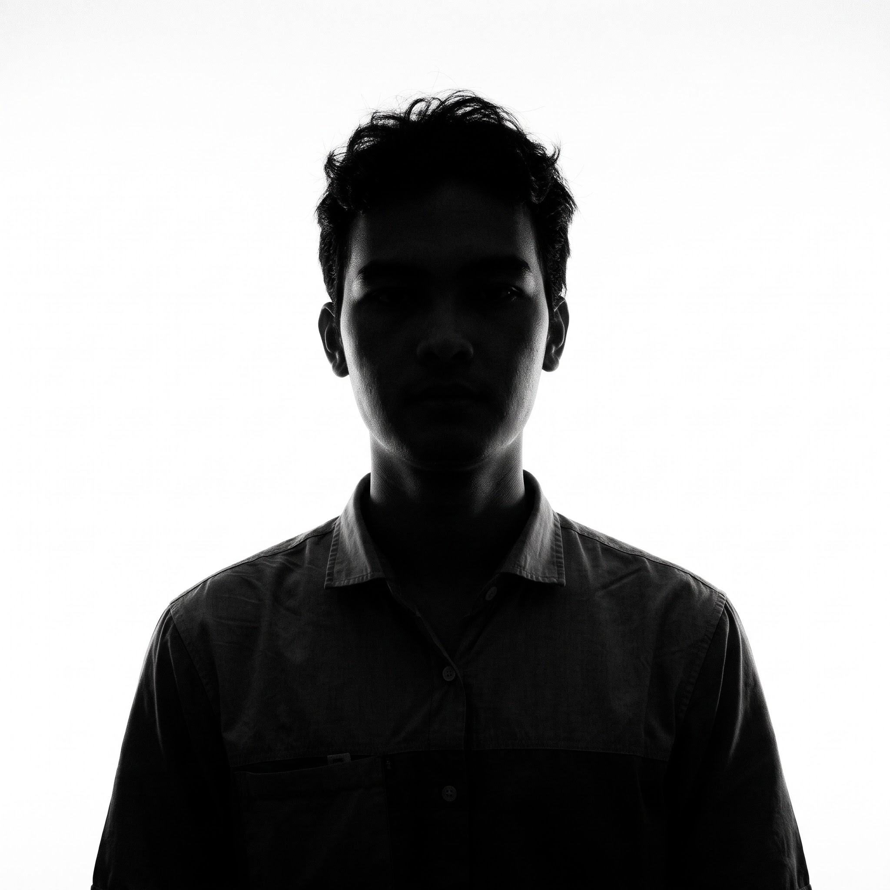

Under Maintenance
A new version is on the way.
I'm currently revamping this portfolio. Please check back soon.
Situs ini sedang diperbarui. Silakan kembali lagi nanti.

I'm currently revamping this portfolio. Please check back soon.
Situs ini sedang diperbarui. Silakan kembali lagi nanti.